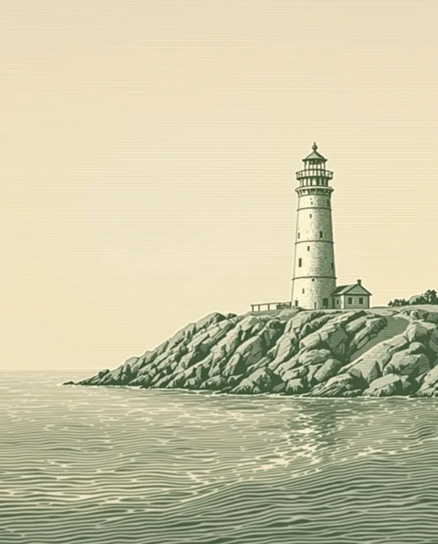
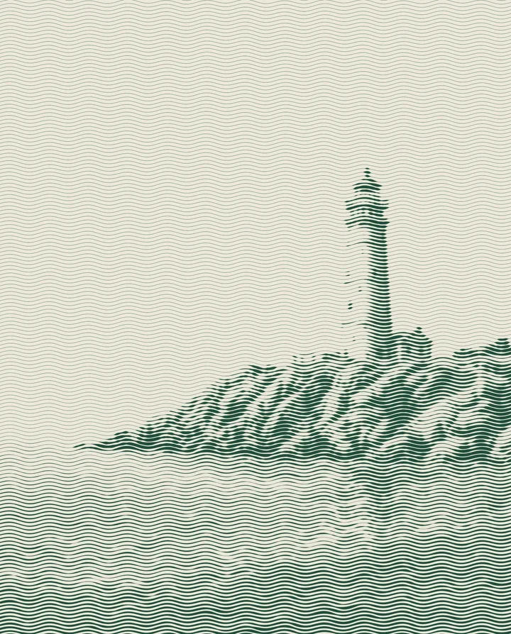

Recreate the banknote wave-line look with Director's Lookbook
Inspired by a post about a wave-line shader.
The look comes from engraved banknotes. Every bit of tone is a horizontal wavy line: the lines swell in the shadows and thin to hairlines in the lights, in one dark green ink on cream paper. We added it to the Lookbook as a card, Banknote Wave-Line, then asked for a hand, took its prompt as written and ran it once through an image model. The words are our own.
Image models get the palette and the fields of lines. On solid shapes they slip back into ordinary crosshatching. For the exact effect, where all of the tone is wave lines, run the free shader below on your own photo.
1. Banknote lighthouse
An invented lighthouse on a headland, printed like the back of a banknote.
The hand
- Worm's-Eye Low Angle (Camera)
- Banknote Wave-Line (Film)
Image prompt
a lone stone lighthouse on a rocky headland above a calm sea. banknote wavy-line engraving, tone built only from dense parallel horizontal wavy lines that swell thick in shadows and thin to hairlines in highlights, one dark money-green ink on cream paper, plain wavy-line background with faint moire. low angle shot from near ground level looking up at the subject, wide lens. Aspect ratio 4:5.


Image models can't hold this look. The shader can. Try the Wave-Line shader on your own photo.
2. Do it to your own photo
The Wave-Line shader turns any photo into this look in your browser. You set the line density, wave size and inks, then save a PNG. Your photo never leaves your device. It is free.
Make your own
Type a feeling into the Lookbook, or ask Claude to deal a hand with the Director's Lookbook connector, hold Banknote Wave-Line, then swap any card that does not fit. Statues, ruins, stags and lighthouses take this look well: big shapes with clear light and shade.